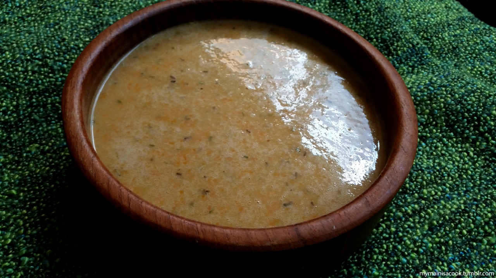

Potage le Magnifique

While I love (dare I say idolise) The Gourmet, one thing that has always been a bit lacking to me is the Potage le Magnifique. Tasty enough, but so very lacking in its potential. Here is my take on this simple but delicious vegetable soup that’s perfect for cold winters! Note: the broth can be substituted with vegetable broth if you’d like a tasty vegan version of this recipe!
ingredients:
- 2 cups chicken broth
- 2 cups beef broth
- 1 cup water
- ¼ cup white wine
- ½ cup plain flour
- 100g butter or olive oil
- 5 cloves garlic, finely chopped
- 2 red onions, chopped
- 1 large leek, chopped
- 3 carrots, peeled and chopped
- 1 large potato, peeled and cubed
- 1 tbsp dried mixed herbs
- 1 bay leaf
- Salt and pepper, to taste
Steps:
- In a pot, melt the butter and fry the leeks on medium heat until softened slightly.
- Add the onions and garlic and fry until browned.
- Pour in the wine and cook for 2 minutes, stirring now and then.
- Add the potatoes, carrots, water, and broth.
- Slowly sift in the flour while stirring continuously, to make sure it doesn’t clump.
- Add the herbs, salt and pepper, and simmer on low heat while covered for 30 minutes, or until the potatoes and carrots have softened.
- Remove the bay leaf and pour the soup into a food processor or blender. Blend until smooth and serve hot!
Go back